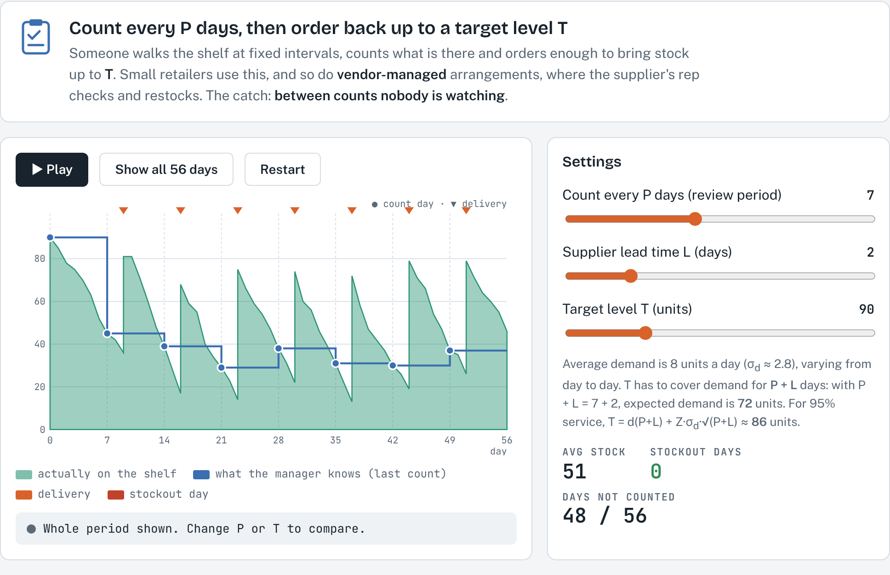
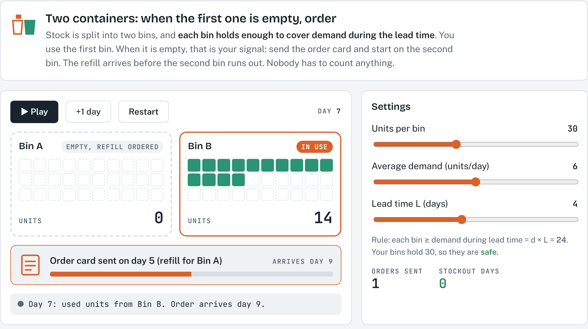
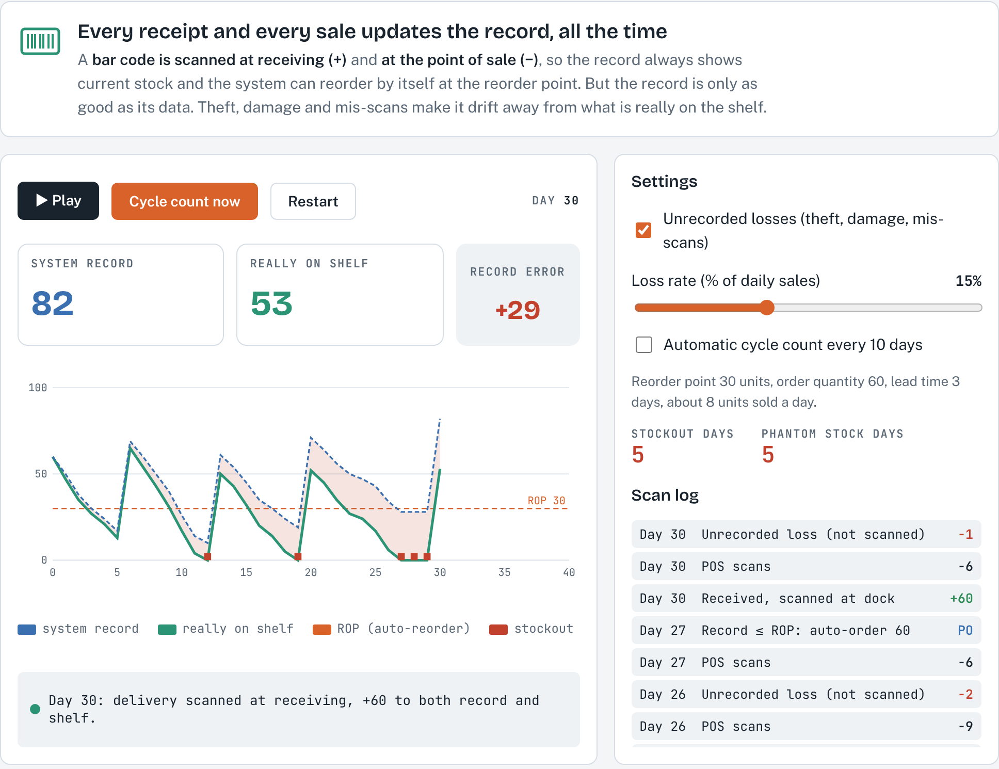

1About this simulation
Every inventory decision, from the EOQ to the reorder point, quietly assumes that we know how many units are on the shelf. In practice that number has to be produced by a record-keeping system, and different systems give managers very different levels of visibility. Record accuracy is therefore a prerequisite to inventory management, production scheduling and, ultimately, sales.
This simulation lets you watch three record systems run day by day and compare what the manager knows with what is really on the shelf. You can change the settings and see the consequences immediately: stockouts, extra stock, or a record that drifts away from reality.
After working through this guide, you should be able to:
- explain how periodic, two-bin and perpetual systems determine the quantity on hand and when they trigger an order;
- explain why a periodic (P) system needs more safety stock than a perpetual (Q) system, and calculate the order quantity at a review;
- size a two-bin system and connect the bin size to the reorder point;
- explain how unrecorded losses (shrinkage) create record errors and phantom stock, and why cycle counting is needed even with bar-code scanning.
2Theory background
Why record accuracy matters
An order is placed when the recorded stock reaches some trigger, but customers are served from the physical stock. When the two differ, the ordering rule fires at the wrong time. There are two families of record systems:
- Periodic systems check the quantity on hand at regular intervals. They are used by small retailers and in vendor-managed inventory, where the supplier checks the shelf and resupplies. The downside is a lack of control between reviews and the need to carry extra inventory to protect against shortages. The two-bin system is a simple variation.
- Perpetual systems track every receipt and every withdrawal as it happens, usually with bar-code readers at receiving and at the point-of-sale (POS) register, so the record is always current.
Whichever system is used, accuracy also depends on good incoming and outgoing record keeping and on good security: limited access to stockrooms, good housekeeping, and accurately labelled bins and shelves.
Notation
The notation is the same as in the course formula sheet. Daily values are used because the simulation runs in days.
| Symbol | Meaning |
|---|---|
| d, σd | Average daily demand (units/day) and its standard deviation |
| L | Lead time (days) from placing an order to receiving it |
| P | Review period: time between counts in a fixed-period (P) system (days) |
| T | Target inventory level in a P system ("order up to" level) |
| Q | Order quantity |
| ROP, SS | Reorder point; safety stock (units) |
| Z | Standard normal value for the chosen service level (see Formula Sheet table) |
Periodic review: the fixed-period (P) system
Stock is counted only at the end of each review period P. At each review we order the amount needed to bring the inventory position back up to the target level T. Because demand varies, the amount ordered is different each time.
Why P + L? An order placed today arrives after L days, and the next chance to order comes only after P days. The stock on hand after this review must therefore cover demand until the following order arrives, which is P + L days away. A perpetual system only has to protect the lead time L (Section 2.5). This is why a P system needs a higher level of safety stock than a fixed-quantity (Q) system.
Worked example (default settings). d = 8 units/day, σd ≈ 2.8, P = 7 days, L = 2 days.
- Expected demand over P + L = 8 × 9 = 72 units.
- Standard deviation over 9 days = 2.8 × √9 = 8.4 units.
- For a 95% service level (Z = 1.645): SS = 1.645 × 8.4 ≈ 14, so T ≈ 72 + 14 = 86 units.
- The simulation's default target of 90 units gives a buffer of 18 units, i.e. Z = 18 / 8.4 ≈ 2.1 (about 98%).
- If the review period doubles to P = 14: demand over 16 days = 128 and σ = 2.8 × √16 = 11.2, so T ≈ 128 + 1.645 × 11.2 ≈ 146 units. Less frequent counting costs a lot of extra stock.
The two-bin system
Stock is kept in two containers. Items are taken from the first bin; when it is empty, an order is placed and the second bin is used. Each bin must hold enough to cover demand during the lead time, so the reserve bin is really a physical reorder point: nobody counts, the empty bin is the signal.
Example (default settings). d = 6 units/day, σd ≈ 2.1, L = 4 days. The minimum is 6 × 4 = 24 units. With 30-unit bins the extra 6 units act as safety stock: Z = 6 / (2.1 × √4) ≈ 1.43, roughly a 92% cycle service level. You will see this in the simulation: about one replenishment cycle in twelve still runs short.
Two-bin systems suit cheap, fast-moving items with fairly steady demand, such as fasteners, gloves or office supplies, and are the idea behind Kanban containers in lean systems.
The perpetual system and the reorder point (Q system)
In a perpetual system every receipt (+) and every withdrawal or sale (−) updates the record. This continuous monitoring is what makes the fixed-quantity (Q) model possible: when the record falls to the reorder point, an order of Q units is placed. The reorder point and safety stock are:
Example (default settings). d = 8, L = 3, so expected lead-time demand is 24 units. The simulation uses ROP = 30, which means SS = 6. With σd ≈ 2.8, σ over the lead time = 2.8 × √3 ≈ 4.85 and Z = 6 / 4.85 ≈ 1.24 (about 89%).
When the record is wrong: shrinkage, phantom stock and cycle counting
A perpetual record is only as good as its data. Shrinkage is inventory that is unaccounted for between receipt and sale, caused by damage, theft (pilferage) and sloppy paperwork; retail losses of 1% of sales are considered good, and many stores exceed 3%. Because these losses are never scanned, the record stays higher than the shelf.
Phantom stock is especially harmful: the system believes stock is available, so it does not reorder, while customers find an empty shelf. If the record never falls to the ROP, the item can stay out of stock until someone counts it. Research on retail stores has found record errors to be widespread (DeHoratius & Raman, 2008).
The remedy is cycle counting: a continuing reconciliation of inventory with inventory records. Items are counted on a rolling schedule, usually based on ABC classes (A items often, C items rarely), errors are documented, and their causes are traced and corrected.
The three systems side by side
| Periodic (P system) | Two-bin | Perpetual (Q system) | |
|---|---|---|---|
| How stock is known | Physical count every P days | Look at the bins | Every receipt and sale is recorded |
| When to order | At each review | When the first bin is empty | When the record reaches the ROP |
| How much | Up to target T (varies) | One bin's worth (fixed) | Q (fixed) |
| Protection period | P + L | L | L |
| Strength | Simple; combines orders; suits vendor-managed inventory | No counting, visual signal | Real-time control, automatic reordering |
| Weakness | No control between counts, more safety stock | Only for simple items with steady demand | Needs scanning systems and cycle counting |
3How to use the simulation
Getting started
- Choose a system with the three tabs at the top: 1 Periodic review, 2 Two-bin system, 3 Perpetual inventory. The comparison table at the bottom of the page summarises Section 2.7.
- Each tab has Play/Pause and Restart buttons, a Settings panel with sliders, live statistics, and a short What to notice list.
- Daily demand is random around the average (standard deviation about 35% of the average), and demand that cannot be met is lost, not backordered.
- The random demand is the same every time you press Restart. This lets you compare settings fairly, and everyone in the class sees the same numbers. Change the settings first, then press Restart and Play.
Tab 1: Periodic review

What you see. The green area is the stock actually on the shelf. The blue step line is what the manager knows: it only changes on count days (blue dots) and stays flat in between. Orange triangles mark deliveries and red marks at the bottom are stockout days. The statistics show the average stock, the number of stockout days, and how many days nobody looked at the shelf. Under the sliders, the simulation shows the expected demand over P + L and the target T the formula gives for 95% service, so you can compare your own choice of T with it.
Try this:
- Press Play and watch the gap between the blue line and the green area grow between counts. Then press Show all 56 days.
- Predict, then test: set P to 14 days and keep T at 90. What happens, and why? Use Section 2.3 to explain.
- Find the smallest target that removes all stockout days when P = 14. Compare it with the 146 units calculated in Section 2.3 and shown under the sliders.
- Return to P = 7 and increase the lead time L to 5. Why do stockouts appear even though counting is just as frequent?
- Set L = 0. This is the case where the supplier's rep visits, counts the shelf and fills it up to T during the same visit. What happens to the blue line and to average stock? Then lower T until stockouts appear, and compare with the target shown under the sliders.
Record your results:
| P | L | T | Avg stock | Stockout days |
|---|---|---|---|---|
| 7 | 2 | 90 | ||
| 14 | 2 | 90 | ||
| 14 | 2 | your value: | ||
| 7 | 5 | 90 | ||
| 7 | 0 | 90 | ||
| 7 | 0 | your value: |
Tab 2: Two-bin system

What you see. Two bins of units. The bin marked in use empties first; when it is empty, the order card is sent (orange bar shows progress through the lead time) and the other bin takes over. The rule line under the sliders tells you whether each bin covers demand during the lead time (d × L).
Try this:
- Use +1 day to step through the first ten days and describe, in your own words, what triggers the order.
- Run 60 days with the default settings (30 units per bin, d = 6, L = 4) and count the stockout days. Is this consistent with the 92% service level calculated in Section 2.4?
- Reduce the bins to exactly d × L = 24 units, then to 20 units. What happens, and why is "just enough on average" not enough?
- Keep 30-unit bins but increase the lead time to 6 days. Calculate the bin size you would need for about 95% service.
Tab 3: Perpetual inventory

What you see. Three counters at the top: the system record, the stock really on the shelf, and the record error (record − shelf). In the chart, the dashed blue line is the record, the green line is the shelf, the dashed orange line is the ROP that triggers automatic orders, and red squares are stockout days. The scan log lists every scanned sale (−), every scanned delivery (+), each automatic purchase order (PO) and every unrecorded loss.
Settings. Unrecorded losses switches shrinkage on or off, and the slider sets it as a percentage of daily sales. Automatic cycle count every 10 days resets the record to the physical count. Cycle count now does a single count at any moment.
Try this:
- Switch losses off, press Restart and run about 60 days. Confirm that the two lines are identical and that orders are placed exactly when the record reaches the ROP.
- Switch losses on at 15%, Restart and run 60 days without cycle counting. Watch the record error grow. Find the first day with phantom stock and explain why the system did not reorder.
- Restart with the same 15% losses and turn on the automatic cycle count. Compare stockout days and phantom stock days with the previous run.
- Try 30% losses with and without cycle counting. What does this suggest about how often high-shrinkage (or high-value, A) items should be counted?
| Losses | Cycle count | Stockout days (60 days) | Phantom stock days |
|---|---|---|---|
| Off | Off | ||
| 15% | Off | ||
| 15% | Every 10 days | ||
| 30% | Off / every 10 days |
4Check your understanding
- A store reviews an item every 10 days. Lead time is 3 days, d = 20 units/day and σd = 5. Calculate T for a 95% service level. At a review there are 110 units on hand and 60 on order. How many units should be ordered?
- Using the same demand data, a perpetual system needs a ROP of how many units for 95% service? Explain why it is lower than T.
- A clinic uses a two-bin system for gloves: 40 boxes are used per day and the supplier delivers in 2 days. What is the minimum bin size? What would you add, and why?
- A perpetual system shows 25 units, but a cycle count finds 18. What is the record error? Give two likely causes and one consequence for reordering if ROP = 20.
- A shop sells about 50 units of an item per day, and 2% of the units sold are lost without being recorded (shrinkage). If the item is not counted for 10 days, how far apart are the record and the shelf? Why does this matter more for an item with a low ROP?
- Explain in two or three sentences why record accuracy is a prerequisite for inventory models such as the EOQ and the reorder point.
References
MSB255 Supply Chain and Operations Management: course materials. University of Stavanger.
Heizer, J., Render, B., & Munson, C. (2017). Operations Management: Sustainability and Supply Chain Management (12th ed.). Pearson.
Chopra, S., & Meindl, P. Supply Chain Management: Strategy, Planning, and Operation. Pearson. Chapter on safety inventory (periodic review policies).
DeHoratius, N., & Raman, A. (2008). Inventory record inaccuracy: An empirical analysis. Management Science, 54(4), 627–641.
Stevenson, W. J. Operations Management. McGraw-Hill. Chapter on inventory management (fixed-order-interval model).
Answers and expected resultsTry the exercises first, then open to check
Simulation results (fixed random demand, 56 or 60 days)
| Run | Result |
|---|---|
| Periodic: P 7, L 2, T 90 | Average stock 51, 0 stockout days; 48 of 56 days not counted |
| Periodic: P 14, L 2, T 90 | Average stock 39, 11 stockout days |
| Periodic: P 14, L 2, T 150 | Average stock 85, 0 stockout days (close to the 146 from the formula) |
| Periodic: P 7, L 5, T 90 | 4 stockout days: T must now cover 12 days (96 units on average) |
| Periodic: P 7, L 0, T 90 | Average stock 64, 0 stockout days. The shelf is filled to T at every count, so the blue line jumps back to 90 and only P = 7 days must be covered (56 units on average, 68 for 95%). |
| Periodic: P 7, L 0, lower T | T = 65 still gives 0 stockout days (average stock 39); at T = 60 one stockout day appears. Without a lead time, a much lower target is enough. |
| Two-bin: 30 / d 6 / L 4 | 12 orders, 1 stockout day in 60 days (about 11 of 12 cycles covered, ≈ 92%) |
| Two-bin: 24 and 20 units | 9 and 18 stockout days: a bin of exactly d × L only covers an average lead time, so busier-than-average lead times run short |
| Two-bin: 30 units, L 6 | 15 stockout days; for 95%: 6 × 6 + 1.645 × 2.1 × √6 ≈ 45 units |
| Perpetual: losses off | Record = shelf throughout; 1 stockout day from demand variation |
| Perpetual: 15%, no count | Record stops above the ROP (around 35) while the shelf is empty; about 30 stockout and 30 phantom stock days |
| Perpetual: 15%, count every 10 days | 2 stockout days, 3 phantom stock days |
| Perpetual: 30%, off / on | 44 / 7 stockout days |
Check your understanding
- P + L = 13 days. T = 20 × 13 + 1.645 × 5 × √13 = 260 + 29.7 ≈ 290 units. Q = 290 − 110 − 60 = 120 units.
- ROP = 20 × 3 + 1.645 × 5 × √3 = 60 + 14.2 ≈ 74 units. It is lower because a perpetual system only needs protection over the lead time (3 days), not over P + L (13 days).
- Minimum = 40 × 2 = 80 boxes per bin. Add safety stock (Z × σd × √L) because demand and delivery times vary, and a stockout of gloves in a clinic is costly.
- Record error = 25 − 18 = +7. Likely causes: theft or damage (shrinkage), unscanned withdrawals, mis-scans or receiving errors. The record (25) is above the ROP (20), so the system will not reorder even though only 18 units are on hand; the order comes late.
- Unrecorded losses ≈ 50 × 2% = 1 unit per day, so after 10 days the record is about 10 units above the shelf. With a low ROP, 10 phantom units are a large share of the reorder point, so the system may not reorder until the shelf is already empty.
- All the models (EOQ, ROP, P system) use the quantity on hand as input. If the record is wrong, orders are placed at the wrong time or in the wrong amount, causing stockouts or excess stock no matter how good the model is.